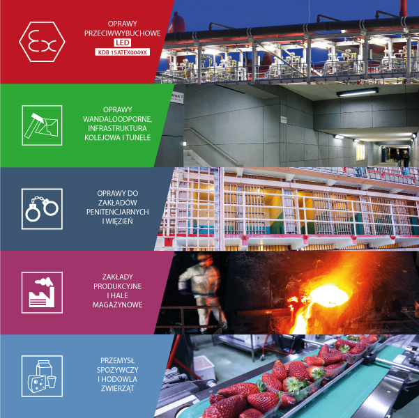

Dział opraw
Proszę wybrać dział
Oprawy przeciwwybuchowe
Oprawy wandaloodporne
Oprawy do więzień
Oprawy do przemysłu i hal produkcyjnych
Oprawy do przemysłu spożywczego
Strefa wybuchowa
Wybierz strefę przeciwybuchową
Strefa 1 "II 2D" zagrożenia wybuchem
Strefa 21 "II 2D" zagrożenia wybuchem
Strefa 2 "II 3G" zagrożenia wybuchem
Strefa 22 "II 3D" zagrożenia wybuchem
Typ oprawy
Wybierz typ oprawy
Napowierzchniowa
Narożna
Wpuszczana
Naświetlacz
Bulkhead
Rurowa
Do agresywnych środowisk
Do amoniaku
Do ekstremalnych temperatur
Wybór oprawy
Proszę wybrać
EXL210LED - oprawa w obudowie z tworzywa PC z kloszem z tworzywa PC
EXL310LED - oprawa w metalowej obudowie z kloszem z tworzywa PC
EXL380LED - oprawa w metalowej obudowie z kloszem ze szkła
EXL390LED - oprawa w metalowej obudowie z kloszem ze szkła lub tworzywa PC
EXF200LED - oprawa w obudowie z tworzywa PC z kloszem z tworzywa PC
EXF250LED - oprawa w obudowie z tworzywa GRP z kloszem z tworzywa PC lub PM
EXF300LED - oprawa w metalowej obudowie z kloszem z tworzywa PC
FLX310LED - oprawa w aluminiowej obudowie z kloszem ze szkła
PLFMLED - oprawa w aluminiowej obudowie z kloszem ze szkła
PLFSLED - oprawa w aluminiowej obudowie z kloszem ze szkła
0403.24LED - oprawa w aluminiowej obudowie z kloszem ze szkła
INV320LED - oprawa w metalowej obudowie z kloszem z tworzywa PC
INV320LED-..-SF - oprawa w metalowej obudowie z kloszem z tworzywa PC
INV320LED-..-RC - oprawa w metalowej obudowie z kloszem z tworzywa PC
INV360LED - oprawa w metalowej obudowie z kloszem z tworzywa PC
INS230 - oprawa w obudowie z tworzywa PC z kloszem z tworzywa PC
INS340 - oprawa w metalowej obudowie z kloszem z tworzywa PC
INP320LED - oprawa w metalowej obudowie z kloszem z tworzywa PC
INP320LED-..-SF - oprawa w metalowej obudowie z kloszem z tworzywa PC
INP320LED-..-RC - oprawa w metalowej obudowie z kloszem z tworzywa PC
INP360LED - oprawa w metalowej obudowie z kloszem z tworzywa PC
HPL425LED - oprawa w metalowej obudowie z kloszem ze szkła lub tworzywa PC
INS340LED - oprawa w metalowej obudowie z kloszem z tworzywa PC
INS370LED - oprawa w metalowej obudowie z kloszem z tworzywa PC
HPL440LED - oprawa w metalowej obudowie z kloszem ze szkła
INX340LED - oprawa w metalowej obudowie z kloszem z tworzywa PC
INX230LED - oprawa w obudowie z tworzywa PC z kloszem z tworzywa PC
INS230LED - oprawa w obudowie z tworzywa PC z kloszem z tworzywa PC
HPL430LED - oprawa w aluminiowej obudowie z kloszem ze szkła
INS395LED - oprawa w metalowej obudowie z kloszem ze szkła
INS350LED - oprawa w metalowej obudowie z kloszem ze szkła lub tworzywa PC
INS250LED - oprawa w obudowie z tworzywa GRP z kloszem z tworzywa
INS270LED - oprawa w obudowie z tworzywa GRP z kloszem z tworzywa PMMA
INS310LED - oprawa w metalowej obudowie z kloszem z tworzywa PC
INS360LED - oprawa w metalowej obudowie z kloszem ze szkła
INS242LED - oprawa rurowa wykonana ze szkła borokrzemowego
*Aby stworzyć klucz dla innej oprawy kliknij przycisk "Rozpocznij od nowa" na dole strony
Materiał Obudowy
Wybierz materiał obudowy
Stal ocynkowana malowana proszkowo
Stal nierdzewna
Poliwęglan
Poliester wzmacniany włóknem szklanym GRP
Stal nierdzewna szczotkowana
Odlew aluminiowy
Materiał Klosza
Wybierz materiał klosza
Szyba hartowana
Szyba hartowana safety-glass
Klosz z poliwęglanu PC
Klosz z polimetakrylanu metylu PMMA, gładka faktura (PM)
Klosz z polimetakrylanu metylu PMMA, "mrożony" (PT)
Szkło borokrzemowe
Strumień oprawy
Wybierz strumien oprawy
2482 lm w wersji o długości ok 600mm
4631 lm w wersji o długości ok 600mm
5550 lm w wersji o długości ok 1200mm
8512 lm w wersji o długości ok 1200mm
7031 lm w wersji o długości ok 1500mm
2775 lm w wersji o długości ok 600mm
4715 lm w wersji o długości ok 600mm
5390 lm w wersji o długości ok 1200mm
7675 lm w wersji o długości ok 1200mm
6570 lm w wersji o długości ok 450mm
13244 lm w wersji o długości ok 900mm
19215 lm w wersji o długości ok 1200mm
4636 lm w wersji o długości ok 600mm
6265 lm w wersji o długości ok 600mm
3160 lm w wersji o długości ok 1200mm
4270 lm w wersji o długości ok 1200mm
6445 lm w wersji o długości ok 1200mm
8710 lm w wersji o długości ok 1200mm
2038 lm w wersji o długości ok 0600mm przy max temp pracy +45°C
3918 lm w wersji o długości ok 0600mm przy max temp pracy +45°C
3867 lm w wersji o długości ok 1200mm przy max temp pracy +45°C
7474 lm w wersji o długości ok 1200mm przy max temp pracy +45°C
4971 lm w wersji o długości ok 1200mm przy max temp pracy +55°C
2603 lm w wersji o długości ok 0600mm przy max temp pracy +60°C
2503 lm w wersji o długości ok 1200mm przy max temp pracy +60°C
1869 lm w wersji o długości ok 0600mm przy max temp pracy +45°C
3816 lm w wersji o długości ok 0600mm przy max temp pracy +45°C
4104 lm w wersji o długości ok 1200mm przy max temp pracy +45°C
7753 lm w wersji o długości ok 1200mm przy max temp pracy +45°C
4840 lm w wersji o długości ok 1200mm przy max temp pracy +55°C
2566 lm w wersji o długości ok 0600mm przy max temp pracy +60°C
2468 lm w wersji o długości ok 1200mm przy max temp pracy +60°C
2069 lm w wersji o długości ok 0600mm przy max temp pracy +45°C
4326 lm w wersji o długości ok 0600mm przy max temp pracy +45°C
4177 lm w wersji o długości ok 1200mm przy max temp pracy +45°C
8692 lm w wersji o długości ok 1200mm przy max temp pracy +45°C
5749 lm w wersji o długości ok 1200mm przy max temp pracy +55°C
2882 lm w wersji o długości ok 0600mm przy max temp pracy +60°C
2661 lm w wersji o długości ok 1200mm przy max temp pracy +60°C
3600 lm w wersji o długości ok 475mm
2103 lm w wersji o długości ok 0600mm
2933 lm w wersji o długości ok 0600mm
4281 lm w wersji o długości ok 0600mm
4836 lm w wersji o długości ok 0600mm
4173 lm w wersji o długości ok 1200mm
4715 lm w wersji o długości ok 1200mm
5755 lm w wersji o długości ok 1200mm
8721 lm w wersji o długości ok 1200mm
5259 lm w wersji o długości ok 1500mm
6142 lm w wersji o długości ok 1500mm
2113 lm w wersji o długości ok 0600mm
2857 lm w wersji o długości ok 0600mm
4171 lm w wersji o długości ok 0600mm
4665 lm w wersji o długości ok 0600mm
4420 lm w wersji o długości ok 1200mm
4990 lm w wersji o długości ok 1200mm
5921 lm w wersji o długości ok 1200mm
9037 lm w wersji o długości ok 1200mm
9853 lm w wersji o długości ok 1200mm
5040 lm w wersji o długości ok 1500mm
7237 lm w wersji o długości ok 1500mm
2140 lm w wersji o długości ok 1200mm i szerokości 150mm
2766 lm w wersji o długości ok 1200mm i szerokości 150mm
4280 lm w wersji o długości ok 1200mm i szerokości 150mm
2140 lm w wersji o długości ok 0600mm i szerokości 250mm
2766 lm w wersji o długości ok 0600mm i szerokości 250mm
4280 lm w wersji o długości ok 0600mm i szerokości 250mm
4260 lm w wersji o długości ok 1200mm i szerokości 250mm
5534 lm w wersji o długości ok 1200mm i szerokości 250mm
9067 lm w wersji o długości ok 1200mm i szerokości 250mm
558 lm w wersji o średnicy 250mm
744 lm w wersji o średnicy 250mm
1026 lm w wersji o średnicy 250mm
1960 lm w wersji o długości ok 0600mm
4884 lm w wersji o długości ok 1200mm
6410 lm w wersji o długości ok 1500mm
2020 lm w wersji o długości ok 0600mm
5030 lm w wersji o długości ok 1200mm
1720 lm w wersji o długości ok 0600mm zasilane stałym napięciem 24VDC
4592 lm w wersji o długości ok 0600mm zasilane stałym napięciem 24VDC
4592 lm w wersji o długości ok 1200mm zasilane stałym napięciem 24VDC
9184 lm w wersji o długości ok 1200mm zasilane stałym napięciem 24VDC
6345 lm o mocy około 50W
7685 lm o mocy około 60W
9380 lm o mocy około 80W
2412 lm w wersji o długości ok 0600mm
3327 lm w wersji o długości ok 0600mm
4664 lm w wersji o długości ok 1200mm
6827 lm w wersji o długości ok 1200mm
9327 lm w wersji o długości ok 1200mm
8561 lm w wersji o długości ok 1200mm
17710 lm w wersji o długości ok 1200mm
6454 lm w wersji o długości ok 1500mm
10890 lm w wersji o długości ok 1500mm
12908 lm w wersji o długości ok 1500mm
21402 lm w wersji o długości ok 1500mm
10524 lm w wersji do pracy przy max temp +60°C
16606 lm w wersji do pracy przy max temp +60°C
20738 lm w wersji do pracy przy max temp +55°C
27402 lm w wersji do pracy przy max temp +40°C
1414 lm w wersji o długości ok 1200mm przy max temp pracy +75°C
2830 lm w wersji o długości ok 1200mm przy max temp pracy +75°C
2438 lm w wersji o długości ok 1200mm przy max temp pracy +70°C
4875 lm w wersji o długości ok 1200mm przy max temp pracy +70°C
4100 lm w wersji o długości ok 1500mm przy max temp pracy +60°C
8200 lm w wersji o długości ok 1500mm przy max temp pracy +60°C
4380 lm w wersji o długości ok 1500mm przy max temp pracy +50°C
8755 lm w wersji o długości ok 1500mm przy max temp pracy +50°C
3327 lm w wersji o długości ok 0600mm przy min temp pracy -40°C
4816 lm w wersji o długości ok 0600mm przy min temp pracy -40°C
5138 lm w wersji o długości ok 1200mm przy min temp pracy -40°C
6827 lm w wersji o długości ok 1200mm przy min temp pracy -40°C
1556 lm w wersji o długości ok 1200mm przy max temp pracy +70°C
3112 lm w wersji o długości ok 1200mm przy max temp pracy +70°C
2713 lm w wersji o długości ok 1200mm przy max temp pracy +65°C
5500 lm w wersji o długości ok 1200mm przy max temp pracy +65°C
4645 lm w wersji o długości ok 1500mm przy max temp pracy +50°C
9351 lm w wersji o długości ok 1500mm przy max temp pracy +50°C
3188 lm w wersji o długości ok 0600mm przy min temp pracy -40°C
4816 lm w wersji o długości ok 0600mm przy min temp pracy -40°C
5138 lm w wersji o długości ok 1200mm przy min temp pracy -40°C
6827 lm w wersji o długości ok 1200mm przy min temp pracy -40°C
2365 lm w wersji o długości ok 0600mm
3188 lm w wersji o długości ok 0600mm
4787 lm w wersji o długości ok 1200mm
6566 lm w wersji o długości ok 1200mm
9797 lm w wersji o długości ok 1200mm
6698 lm o mocy około 50W
11762 lm o mocy około 100W
19785 lm o mocy około 150W
9553 lm w wersji o długości ok 1200mm optyka szerokostrumieniowa
16784 lm w wersji o długości ok 1200mm optyka szerokostrumieniowa
10464 lm w wersji o długości ok 1500mm optyka szerokostrumieniowa
20934 lm w wersji o długości ok 1500mm optyka szerokostrumieniowa
9845 lm w wersji o długości ok 1200mm optyka wąskostrumieniowa
18026 lm w wersji o długości ok 1200mm optyka wąskostrumieniowa
11438 lm w wersji o długości ok 1500mm optyka wąskostrumieniowa
23172 lm w wersji o długości ok 1500mm optyka wąskostrumieniowa
2274 lm w wersji o długości ok 0600mm
3168 lm w wersji o długości ok 0600mm
4906 lm w wersji o długości ok 1200mm
6387 lm w wersji o długości ok 1200mm
2274 lm w wersji o długości ok 1200mm i szerokości 100mm
3136 lm w wersji o długości ok 1200mm i szerokości 100mm
4548 lm w wersji o długości ok 1200mm i szerokości 150mm
6271 lm w wersji o długości ok 1200mm i szerokości 150mm
9096 lm w wersji o długości ok 1200mm i szerokości 150mm
2250 lm w wersji o długości ok 0600mm
3103 lm w wersji o długości ok 0600mm
4644 lm w wersji o długości ok 1200mm
6155 lm w wersji o długości ok 1200mm
10084 lm w wersji o długości ok 1200mm
2276 lm w wersji o długości ok 0600mm
3136 lm w wersji o długości ok 0600mm
3885 lm w wersji o długości ok 1200mm
5212 lm w wersji o długości ok 1200mm
1300 lm ze źródła w postaci modułów LED
1055 lm ze źródła E27 LED
5950 lm o mocy 35W
8500 lm o mocy 50W
10200 lm o mocy 60W
13600 lm o mocy 80W
2000 lm o mocy 20W
7921 lm w wersji o długości ok 1200mm
Rodzaj dławnic
Wybierz rodzaj dławnic
Przepusty gumowe
Dławnice plastikowe
Dławnice metalowe
Złącze RST
Wielkość dławnic
Wybierz wielkość dławnic
Średnica 20mm
Średnica 25mm
Przepusty o średnicy 20mm
Wersje awaryjne / dali
Wybierz rodzaj pracy awaryjnej /dali
Oprawa standardowa - bez układu awaryjnego
Wersja A3 - praca awaryjna 3 godzinna
Wersja A3S - praca awaryjna 1 godzinna do ujemnych temp.
Wersja ZB - do pracy z centralną baterią
Wersja ZBS - do pracy z centralną baterią firmy ES-SYSTEM
Wersja ZBH - do pracy z centralną baterią firmy HYBRYD
Wersja ZBT - do pracy z centralną baterią firmy TM-TECHNOLOGIE
Wersja ZBC - do pracy z centralną baterią firmy CEAG
Wersja ZBD - do pracy z centralną baterią firmy CEAG
Wersja ZBR - do pracy z centralną baterią firmy RP TECHNIK
Wersja ZBM - do pracy z centralną baterią firmy A&M MICHALOWSKI
Wersja DA - do pracy DALI
Przelot*
Wybierz czy oprawa ma być wykonana w wersji przelotowej
TAK
NIE
*Aby ponownie odblokować wybór przelotu należy zmienić pole wersje awaryjne/dali
Wybór układu dławnic
Wybierz układ dławnic
Jeden wpust kablowy po jednej stronie - 10
Jeden wpust kablowy po obu stronach - 11
Dwa wpusty kablowe po jednej stronie - 20
Dwa wpusty kablowe po jednej i jeden po drugiej stronie - 21
Dwa wpusty kablowe po obu stronach - 22
Wybór mocowania
Wybierz mocowanie
AMO1 - Standardowy uchwyt mocujący ze stali o grubości 1.5mm o rozstawie otworów 160mm
AMO3 - Nierdzewna obejma na rurę
AMO4 - Wspornik do montażu oprawy pod kątem 45 stopni
AMO5 - Wspornik dystansowy o wysokości 68mm
BK - Oprawa wyposażona w dwa zestawy montażowe przeznaczone do mocowania bezpośredniego do podłoża
Nierdzewny Wspornik nastawny
Nierdzewny wspornik do bezpośredniego mocowania do ściany
Wersja napowierzchniowa montowana za pomocą otworów bezpośrednio do sufitu
Wersja wpuszczana montowana do sufitu kasetonowego
Montaż bezpośrednio do ściany za pomocą otworów montażowych
Montaż w ścianie, ramka maskująca otwór montażowy
Wspornik umożliwiający zamocowanie oprawy na ścianie jak i suficie
AMO2 - zawiesie oczkowe do mocowania oprawy na lince
AMO10 - wibroizolacyjny wspornik montażowy
Wspornik umożliwiający zamocowanie oprawy bezpośrednio do podłoża
AMO7 - nastawny nierdzewny wspornik
AMO8 - zawiesie do linki stalowej z płynną regulacją długości
AMO6 - spawany, nierdzewny wspornik montażowy o średnicy otworów fi9mm i rozstawie 60mm oraz 85mm
AMO16 - uchwyt typu U-bolt do montażu na rurach.
Wybór wyposażenia dodatkowego
Wybierz dodatkowe wyposażenie
Oprawa standardowa
Oprawa w wykonaniu half-moon
Oprawa z sensorem
Oprawa z dodatkowym układem night-light
Oprawa wibroodporna
Oprawa w drugiej klasie ochronności

Wygeneruj kod produktu
Rozpocznij od nowa
Kopiuj do schowka
Wyślij e-mail z zapytaniem
×